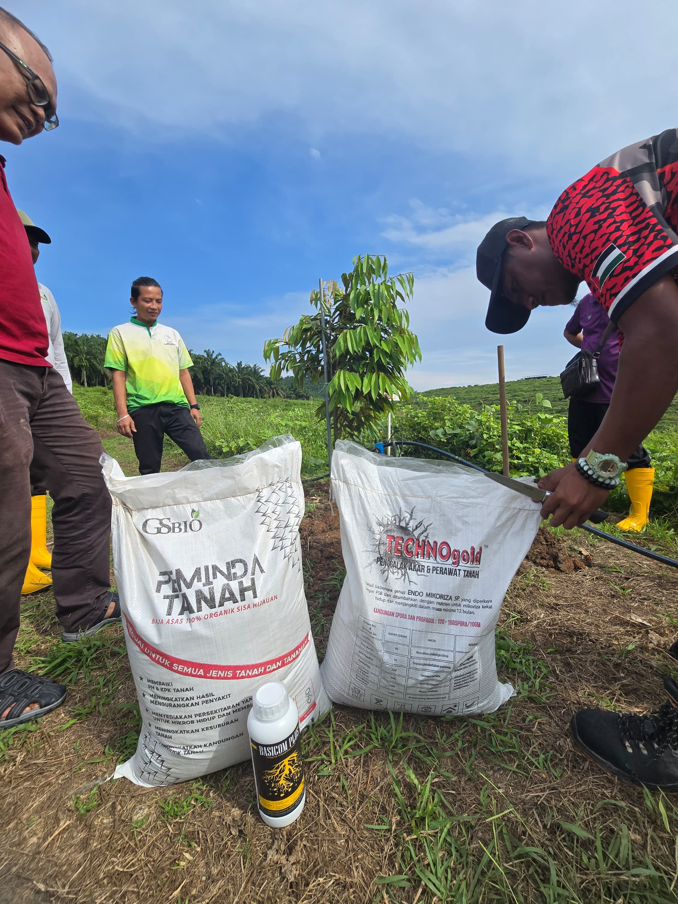
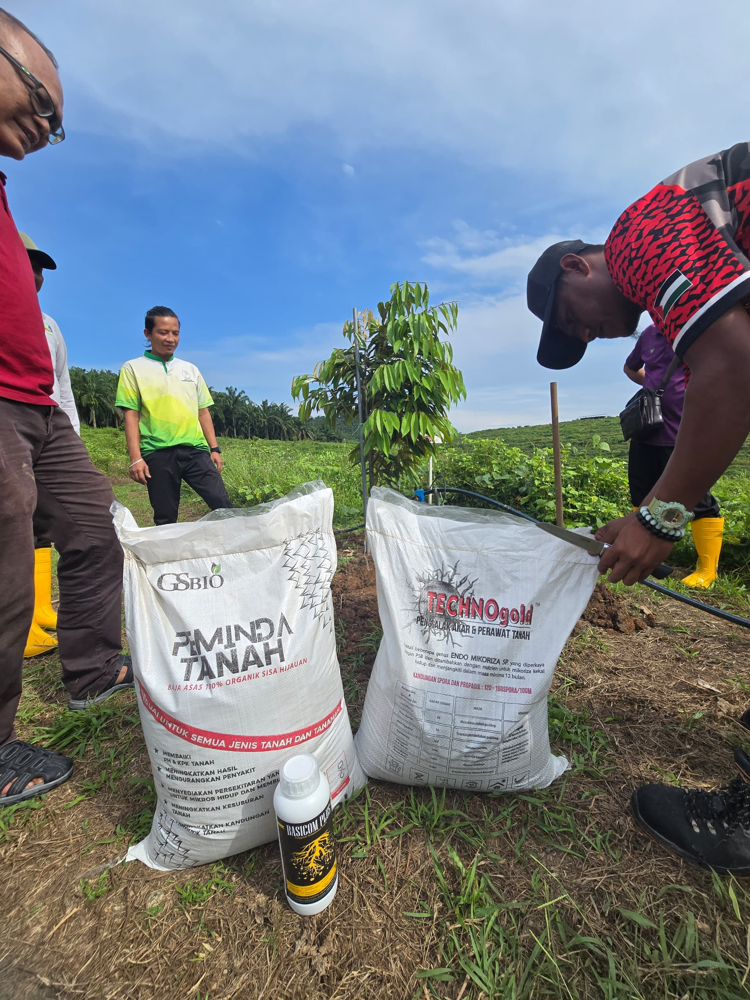

A company based in Kajang/Bangi, Malaysia, established in 2012, specializing in the production of agricultural inputs such as probiotic microbes, bio-organic fertilizers, and mineral products.
Click For ShopeeGigante Solutions Sdn. Bhd. is a Malaysia-based agricultural solutions company committed to delivering innovative, sustainable, and high-quality bio-based products for modern farming and gardening needs..


 

BIOSOL has a cocktail of billions of selected microbes that actively compost rice straw into bio-organic fertilizer and convert silica into silicate in the rice fields.
BASICOM.PLUS is a microbial-based fertilizer that helps revive dead soil, helping to obtain fertilizer from the environment.
Seladang Merah is a combination of microbes that nurse and control the attack of rice blast, BLB, BPB, stem blight and sheath blight.
Address:
491 & 492 ,Jalan Nilai 7/10, Kawasan Perindustrian Nilai 7, 71800 Nilai, Negeri Sembilan
Phone:
+60 19-208 5125
Email:
gigante5588@gmail.com